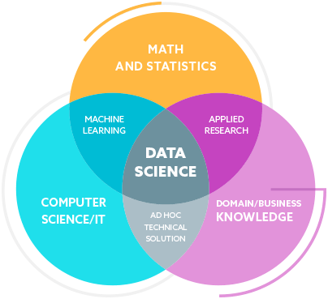
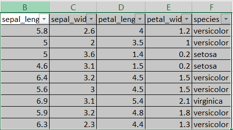
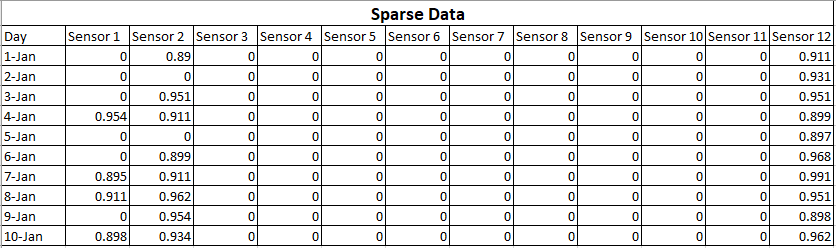

Keyboard shortcuts:
N/СпейсNext Slide
PPrevious Slide
OSlides Overview
ctrl+left clickZoom Element
If you want print version => add '
?print-pdf' at the end of slides URL (remove '#' fragment) and then print.
Like: https://wwwcourses.github.io/...CourseIntro.html?print-pdf
Data Science Overview.
Datasets Concepts.
Created for

Iva E. Popova, 2024,

Data Science Overview
What is?
- Data science is an interdisciplinary field that deals with extracting information and insights from vast amount of noisy, structured and unstructured data, and apply knowledge from data across a broad range of application domains.
- The data used for analysis can come from many different sources and presented in various formats.
Data Science Fields
{kind=link}
Data Scientist Skills
- Strong knowledge of programming languages Python (or R, SAS)
- Familiarity working with large amounts of structured and unstructured data
- Processing and analyzing data for business needs
- Understanding of math, statistics, and probability
- Data visualization and data wrangling skills
- Knowledge of machine learning algorithms and models
- Good communication and teamwork skill
Careers in Data Science
- Data scientist: Uses data to understand and explain the phenomena around them, to help organizations make better decisions.
- Data analyst: Gathers, cleans, and studies data sets to help solve business problems.
- Data engineer: Build systems that collect, manage, and transform raw data into information for business analysts and data scientists.
- Data architect: Reviews and analyzes an organization’s data infrastructure to plan databases and implement solutions to store and manage data.
- Business intelligence analyst: Gathers, cleans, and analyzes sales and customer data, interprets it, and shares findings with business teams.
Data Science Concepts
Data Science Concepts
The Data Science Life cycle
- Capture: this stage involves gathering raw structured and unstructured data.
- Data Acquisition, Data Entry
- Maintain: this stage covers taking the raw data and putting it in a form that can be used.
- Data Warehousing, Data Cleansing, Data Staging, Data Processing, Data Architecture
- Process: data scientists take the prepared data and examine its patterns, ranges, and biases to determine how useful it will be in predictive analysis.
- Data Mining, Clustering/Classification, Data Modeling, Data Summarization
- Analyze: this stage (one of the most important) involves performing the various analyses on the data.
- Exploratory/Confirmatory, Predictive Analysis, Regression, Text Mining, Qualitative Analysis
- Communicate: in this final step, analysts prepare the analyses in easily readable forms such as charts, graphs, and reports.
- Data Reporting, Data Visualization, Business Intelligence, Decision Making
Related fields
- Data cleansing (cleaning) - is the process of identifying incomplete, incorrect, inaccurate or irrelevant parts of the data and then replacing, modifying, or deleting the dirty or coarse data.
- Data Mining - is the process of extracting and discovering patterns and hidden relationships in large data sets involving methods at the intersection of machine learning, statistics, and database systems.
Data wrangling (Data munging)
- Data wrangling is the process of transforming and mapping data from one "raw" data form into another format with the intent of making it more appropriate and valuable for analytics
- Data analysts typically spend the majority of their time in the process of data wrangling compared to the actual analysis of the data
- Data wrangling process starts from extracting the data in a raw form from the data source, "munging" the raw data (e.g. sorting) or parsing the data into predefined data structures, and finally depositing the resulting content into a data sink for storage and future use.
- Data wrangling can benefit data mining by removing data that does not benefit the overall set, or is not formatted properly, which will yield better results for the overall data mining process
What is Dataset?
What is Dataset?
What is data?
- Data is just a value which is observed or measured without being interpreted or analyzed.
- Information is data that is interpreted and has some meaningful inference for the user.
- Knowlege is combination of inferred information, experiences, learning, and insights
{kind=link}
Structured vs Unstructured Data
- Structured data are organized in some predefined format which allows data to be easily searched and analyzed.
- Structured data usually are represented (structured) as table (excel file).
- Unstructured data are not organized in a predefined format.
- Common examples of unstructured data are text, images, audio and video files.
What is a data set?
{kind=link}
- A dataset is an organized collection of data.
- A dataset typically covers one topic at a time.
- In statistics, data sets usually come from actual observations and each row corresponds to one observation.
- A database is an organized collection of data stored as multiple datasets
Dataset Concepts

- The datasets used in Machine Learning are typically organized in tables.
- Each row (record) represent an observation (also called example, sample, data point, data object) about some attributes (also called features, variables).
- The data itself can be of various types (numerical, categorical and so on).
Datasets characteristics
Overview
Dimensionality
- The dimensionality of a data set is the number of attributes that the objects in the data set have.
- In a particular data set if there are high number of attributes (also called high dimensionality), then it can become difficult to analyse such a data set. When this problem is faced, it is referred to as Curse of Dimensionality.
Sparsity
{kind=link}
- For some data sets most attributes of an object have values of 0.
- In many cases fewer than 1% of the entries are non-zero. Such a data is called sparse data or it can be said that the data set has Sparsity.
Datasets types
Datasets types
By structure
- Record Data
- Relational records
- Data matrix
- Graph (Network) Based Data
- World Wide Web
- Social networks
- Molecular structures
- Ordered Data
- Video data as sequence of images
- Temporal data like time series
- Genomic sequence data
By data values
- Numerical
- Categorical
- Bivariate
- Multivariate
- Correlation
Numerical Dataset
- When data in a dataset are numbers these dataset are called Numerical (Quantitative) dataset.
- Example: height, age, price
Categorical dataset
- When data values are values of a group (category)
- Dichotomous: when a category contain only 2 values, like marital status (Single/Married), vagitarian (yes/no).
- Polytomous: when values in a category are more than two, like race, gender
Correlation dataset
- When the values in a dataset depends on each other, i.e there is some relation between values.
- Positive correlation: when two values move in same direction, like height and weight, temperature and ice-cream sales.
- Negative correlation: when increase in one variable is associated with a decrease in the other. Example: birth year and age
Bivariate and Multivariate dataset
- Bivariate dataset has two variables, a dependent and an independent variable.
- money spent on advertising and revenue from sales
- number of hours studied and the corresponding GPA for students
- age and resting heart rate in medicine
- Multivariate dataset contains three or more variables.
- multivariate datasets available on data.world
Datasets Resources
Datasets Resources
- dataset search @Google
- Google Dataset Search aggregates data from external sources, providing a clear summary of what’s available, a description of the data, who it’s provided by, and when it was last updated
- datasets @kaggle
- Kaggle offers aggregated datasets, but it’s a community hub rather than a search engine
- UCI Machine Learning Repository
- Datasets are clearly categorized by task (i.e. classification, regression, or clustering), attribute (i.e. categorical, numerical), data type, and area of expertise
- Datahub.io
- covers a variety of topics from climate change to entertainment, but mainly focuses on areas like stock market data, property prices, inflation, and logistics.
- Портал за отворени данни
- Достъп до публични данни в Република България в отворен и машинночетим формат
Hands-on: Data Analys on Titanic Dataset with Pandas
Hands-on: Data Analys on Titanic Dataset with Pandas
Check out Jupyter Notebook: Data Analyses on Titanic Dataset